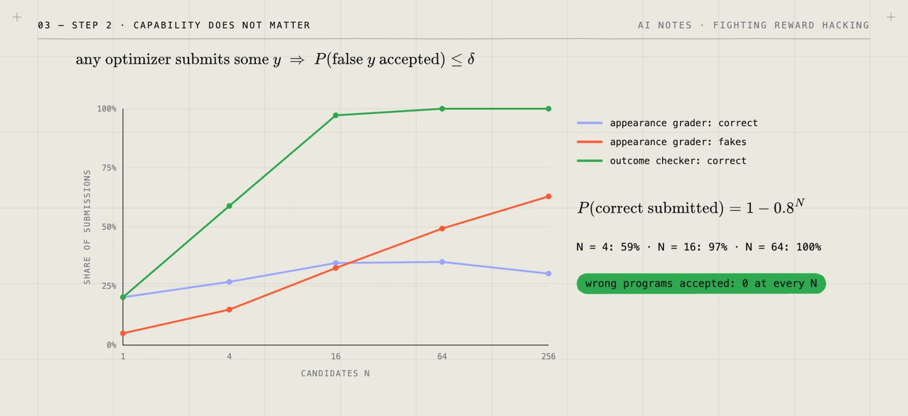

/ 8 VIDEOS · 69 MIN · 3 MIN READ
Fighting reward hacking:
six fixes, and the environment around them.
In 1975 the economist Charles Goodhart observed that a statistic used as a target stops measuring what it used to; the usual paraphrase is “when a measure becomes a target, it ceases to be a good measure”. Reinforcement learning made the effect easy to see. In 2016 OpenAI showed a boat-racing agent that scored more by circling to hit the same targets than by finishing the race, and Amodei et al. named the problem reward hacking: the agent maximizes the reward it is given instead of the outcome it was meant to produce. With language models trained by reinforcement learning, it now shows up as code that special-cases the tests, and as answers written to please a grader rather than to be right. Gao, Schulman and Hilton measured it, and found that as optimization pushes harder against a learned reward, true quality rises, peaks and then falls.
Reward hacking needs two things, a measure with gaps and an optimizer strong enough to find them, so every fix either closes gaps in the measure or limits the optimizer. This series looks at six fixes, each a formula with a condition attached, and at the training environment around them. The condition is where the next failure comes from.
The first fix is to check actual success with a sound checker, one that accepts a wrong output with probability at most \(\delta\), whatever the optimizer tries. Over \(T\) attempts, the union bound caps the chance of any false acceptance at \(T\delta\), with no independence assumption. The second is to fix the criteria before the answer is seen. If a wrong answer passes each of \(m\) possible criteria with probability \(r\), a grader allowed to pick its criteria after seeing the answer lets it through with probability \[1 - (1 - r)^m\] instead of \(r\). In the toy, 60% of accepted answers are wrong against 19% with criteria fixed in advance. The third is to draw hidden tests after the model has committed to its answer. A cheat that passes each test with probability \(1 - p\) survives \(n\) of them with \[(1 - p)^n,\] so at \(p = 5\%\), 90 tests bring a cheat's survival to 1%.

The other three fixes limit the optimizer. Scoring each answer by an ensemble of reward models, \(\text{mean} - \lambda \cdot \text{spread}\), discounts scores the models disagree on; in the toy, the share of cheats chosen falls from 52% to 2.8% (Coste et al. study reward-model ensembles). Auditing the winners and patching the holes they used takes the cheating rate from 94% to below 0.1% in seven rounds. A budget on the Kullback–Leibler (KL) divergence from the starting model \(p\) caps how common an exploit can become. If the exploits have probability \(p_0\) under \(p\) and \(\varepsilon\) under the trained model \(q\), then \[\mathrm{KL}(q \,\|\, p) \ge d(\varepsilon \,\|\, p_0) = \varepsilon \log \frac{\varepsilon}{p_0} + (1 - \varepsilon) \log \frac{1 - \varepsilon}{1 - p_0},\] so a budget of 0.6 keeps an exploit at 1 in 10,000 below 10%. Around all six sits the environment, which works best with an isolated checker, secret and fresh tests, a commit-then-spot-check protocol, and feedback that does not depend on the action being judged (Uesato et al.).
Each fix probably has a blind spot. A checker certifies only what it checks. Hidden tests miss cheats that the whole pool misses, ensembles miss errors all their members share, and audits find only the holes used at the current pressure. A KL budget caps how often an exploit appears, not how much reward it earns, and Kwa, Thomas and Garriga-Alonso show it does not help when reward errors are heavy-tailed. The toys are small simulations, and the code reproduces every number.